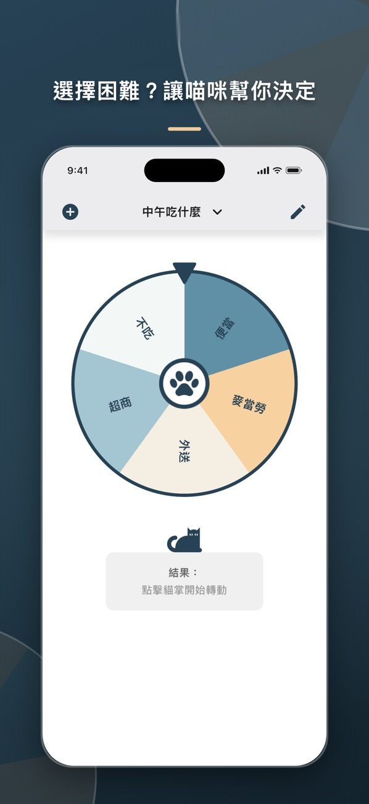
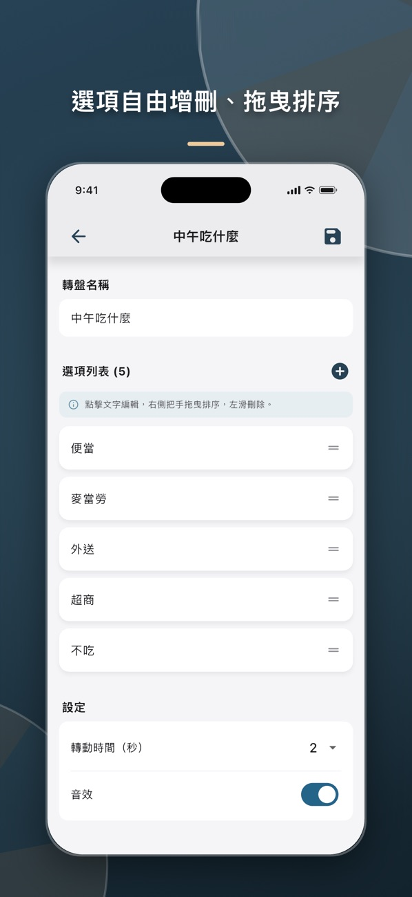
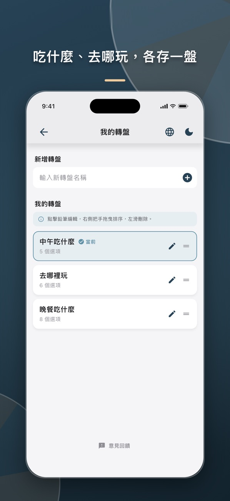

喵轉盤：選擇障礙，讓貓咪轉盤決定
中午吃什麼想了十分鐘？把選項放進轉盤，點一下貓掌，轉到哪就吃哪。也能用來決定晚餐、旅遊地點、誰去倒垃圾。
App Store 免費下載iPhone（iOS 15 以上）、Apple Watch・Android 版在 Google Play



喵轉盤 App 重點
- 適合
- 午餐、晚餐吃什麼，去哪裡玩，誰先做家事，聚會抽順序
- 轉盤
- 可以建很多個轉盤，每個都能新增、修改、排序選項
- 內建
- 中午吃什麼、晚餐吃什麼、去哪裡玩三個轉盤，打開就能轉
- 裝置
- iPhone（iOS 15 以上）、Apple Watch、Android
- 費用
- 免費下載，有廣告；可一次購買去除廣告
喵轉盤怎麼用
第一次打開就有現成的轉盤可以轉。
選一個轉盤
從內建的「中午吃什麼」「晚餐吃什麼」「去哪裡玩」開始，或新增自己的轉盤。
放進選項
把想選的店家、地點或人名加進去，可以修改和排序。
點貓掌轉
點一下貓掌，轉盤喵一聲轉起來，停在哪個就是答案。
喵轉盤的功能
簡單好上手，也耐看。
- 多個轉盤吃的、玩的、工作分配各一個，隨時切換。
- 自由編輯選項新增、修改、排序選項，店家吃膩了就換掉。
- 喵一聲轉盤轉動時有貓咪音效，結果揭曉更有感。
- 莫蘭迪配色柔和的配色，看起來舒服不刺眼。
- Apple Watch手錶上也能轉，手機不用拿出來。
費用
下載免費，App 內有廣告。不想看廣告可以一次購買「去除廣告」，不是訂閱；換手機在 App 內按「恢復購買」即可找回。
常見問題
喵轉盤要錢嗎？
下載和使用都免費，App 內有廣告；想去除廣告可以一次購買，不是訂閱。
可以自己加選項嗎？
可以。每個轉盤都能新增、修改、排序選項，也能新增更多轉盤。
除了吃什麼還能用在哪？
旅遊地點、週末行程、誰先洗碗、聚會抽順序，只要是要做決定的事都能放進轉盤。
有 Android 版嗎？
有，在 Google Play 搜尋「喵轉盤」或從本頁的連結下載。
Apple Watch 能用嗎？
可以，iPhone 版附 Apple Watch App，在手錶上也能轉。